High-Performance GigE SWIR Camera
HG-A130SW
Sony InGaAs SWIR IMX990 | 1.3 Megapixel | Global Shutter
Release Date: 2021. 10. 06 (Rev 1.1)

1. Getting Started
1.1 PC System Requirements
| CPU | Intel Core i3 (Minimum), i5 or higher (Recommended) |
|---|---|
| RAM | 2GB (Minimum), 8GB or higher (Recommended) |
| OS | Windows 7 (32/64bit) or higher |
| LAN Card | Intel PRO/1000xT or higher |
| VGA | FHD support (Minimum), UHD support (Recommended) |
1.2 SDK Installation
To acquire images, use the provided Crevis SDK or standard libraries like HALCON, Cognex, or CVB.
Download Link: CVSCam SDK Download
1.3 Cables & Network
- Category 5E or higher network cable is required.
- Power Supply: DC 12V ~ 24V.
- When using PoE+, do not apply external power to the 12-pin connector.
1.4 Firewall and Antivirus Programs
For stable packet transmission, firewall and antivirus programs should be disabled or set as exceptions.
Firewall Configuration
- Windows 8, 8.1, 10: Start > Control Panel > Windows Defender Firewall > Turn Windows Defender Firewall on or off.
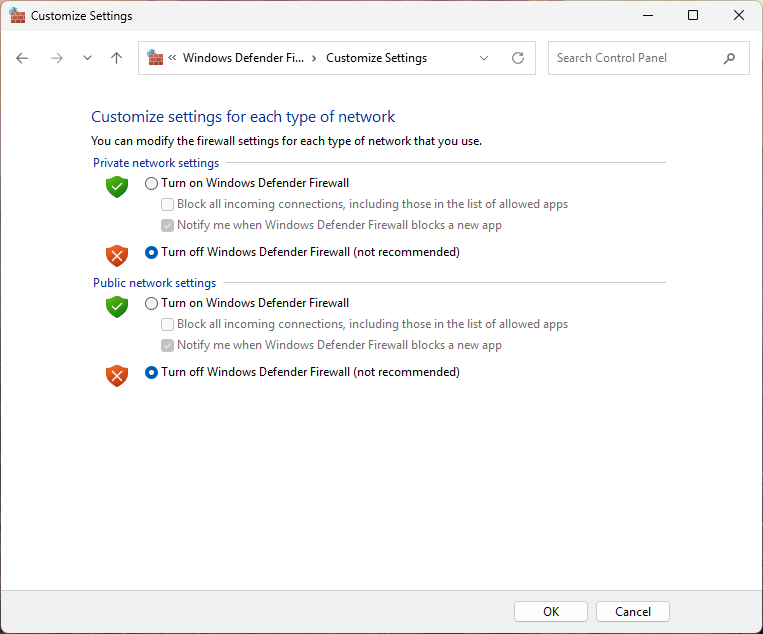
1.5 Precautions
Operational Temperature
- Case Temperature: 0°C to +45°C
- Sensor Target Temperature: +15°C
- Note: Maintain a constant temperature as data output may change based on ambient temperature variations. Power consumption may increase as sensor cooling works to maintain the target.
Network & Communication
- Connecting more than two cameras via an Ethernet hub may cause bandwidth issues.
- UDP Communication: Does not guarantee data transmission. Configure the camera and network card according to the Installation Guide to minimize packet loss.
- Filter Driver: Run with Administrator privileges to use the filter driver. (CamGuide runs with admin rights automatically).
Packet Size Optimization
Larger packet sizes minimize loss, but the camera packet size must be smaller than the network card's Jumbo Frame/Packet size.
Packet Size = (Image Width × n) + 36
(n is a value where the packet size does not exceed the Jumbo Frame size).
Ex: For 1296x1032 resolution, Recommended Packet Size = (1296 × 6) + 36 = 7812.
LED Status Indicators
| Left LED (Link) | Right LED (Status) | Status Description |
|---|---|---|
| Solid Red | Solid Red | Ethernet disconnected or 10Mb or 100Mb connection established |
| Solid Green | Solid Red | DHCP IP setup in progress |
| Solid Green | Off | IP setup complete, waiting for Acquisition Start |
| Solid Green | Solid Green | Waiting for Trigger input |
| Solid Green | Flashing Green | Image data transferring |
General Warnings
- Moisture: The product is not waterproof. Avoid exposure to high humidity or water.
- Magnetic Fields: Strong magnetic or electric fields may cause signal distortion.
- Ventilation: Due to high power consumption, maintain good airflow around the camera. Do not seal the device in a confined space.
2. Product Specifications
2.1 Product Overview
- Sony SWIR Sensor: High-performance InGaAs sensor for broad spectral imaging.
- Advanced Scan Modes: Supports ROI (Region of Interest) and X/Y Reverse imaging.
- Dynamic Acquisition: Freerun and precise Trigger Mode support.
- Image Enhancement: Built-in Defective Pixel Correction and Flat Field Correction (Tile FFC).
- Optimal Clarity: Sharpness Enhancement and Contrast/Brightness control features.
- Thermoelectric Cooling: Active Sensor Cooling Auto Mode (Target: 15°C) to reduce noise.
- Industrial Standard: Fully compliant with GigE Vision 1.2 and GenICam protocols.
- External Control: External Trigger support via a dedicated 12-pin circular connector.
- Dual Power Supply: DC 12V~24V (10.8~26.4V range) or high-efficiency PoE+.
2.2 Main Specifications
| Model | HG-A130SW | |
|---|---|---|
| Sensor | Sony InGaAs SWIR IMX990-AABA (Global Shutter) | |
| Spectral Response | Visible + SWIR wideband (0.4 µm to 1.7 µm) | |
| Cooling System | Built-in Thermoelectric Cooler (TEC) / Target: +15°C | |
| Resolution | 1296 (H) x 1032 (V) | 1.3 Megapixel | |
| Sensor Format | 1/2" | |
| Pixel Size | 5.0 µm x 5.0 µm | |
| Max Frame Rate | 72 fps (Actual 71.5 fps) | |
| Exposure Time | 13.1 µs ~ 1 sec (Exposure Offset: 7.372 µs) | |
| Sync System | Internal, External (12-pin), Software Trigger | |
| Gain Control | Analog: 0 ~ 18 dB (1x to 8x) | Digital: 0 ~ 24 dB (1x to 16x) | |
| Black Level | 0 ~ 4095 (12-bit) | |
| Pixel Format | Mono8/10/12, Mono10/12 Packed | |
| Optical Filter | 900nm Long Pass | |
| Power Supply | DC 12V ~ 24V (±10%) or PoE+ (IEEE 802.3at) | |
| Consumption (DC) | < 3.8 W (Camera only) | Max 15 W (TEC active) | |
| Consumption (PoE+) | < 3.9 W (Excluding sensor cooling) | |
| Dimensions | 55 x 55 x 74 mm (Excluding mount and connector) | |
| Weight | < 330 g | |
| IP Rating | IP30 | |
| Operating Temp. | 0°C ~ +45°C (Based on case temperature) | |
| Standard Compliance | CE (EN61326-1; 2013; Class A), RoHS, WEEE, UL, FCC | |
2.3 Spectral Response

Figure 1. Relative Spectral Response (Wideband Sensitivity 400nm - 1700nm)
3. Camera Interface
3.1 Back Panel Layout
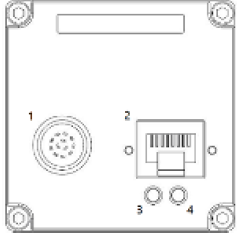
| 1 | Power & External I/O (12-pin Circular) |
|---|---|
| 2 | Gigabit Ethernet (RJ45 with PoE+) |
| 3, 4 | LED Status Indicators |
3.2 12-Pin External I/O Pin Map
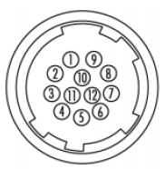
Hirose 12-pin
| Pin No. | Name | I/O | Description |
|---|---|---|---|
| 1 | GND | IN | Power Ground |
| 2 | VCC | IN | 10.8V ~ 26.4V DC Input |
| 3 | TRIG1_IN- | IN | Line 4 (Opto-Isolated Input-) |
| 4 | TRIG1_IN+ | IN | Line 4 (Opto-Isolated Input+, 3.3V~24V) |
| 5 | TRIG0_IN- | IN | Line 3 (Opto-Isolated Input-) |
| 6 | TRIG0_IN+ | IN | Line 3 (Opto-Isolated Input+, 3.3V~24V) |
| 7 | DIO0 | I/O | Line 1 (Direct I/O, 3.3V) |
| 8 | DGND | IN | Direct I/O Ground |
| 9 | NC | - | Do Not Connect |
| 10 | DIO1 | I/O | Line 2 (Direct I/O, 3.3V) |
| 11 | VCC | IN | 10.8V ~ 26.4V DC Input |
| 12 | GND | IN | Power Ground |
3.3 LED Status Summary
The camera's current status can be monitored via the LEDs on the back panel.
| Left LED (Link) | Off: Power Off / Red: 100Mb Link / Green: Gigabit Link |
|---|---|
| Right LED (Status) | Red: IP Conflict / Green Solid: Wait Trigger / Green Flash: Transferring |
3.3 RJ45 Connector
- Supports both Direct and Cross network cables.
- Compatible with PoE+ (IEEE 802.3at) standard.
- Supports Category 5E UTP cables. However, Category 6 STP cables are highly recommended for enhanced electromagnetic stability and performance.
3.4 LED Status Summary
The camera's real-time operating status can be monitored through the two LEDs located on the back panel.
| LED Position | Color / Behavior | Description |
|---|---|---|
| Left LED (Link) | Off | Power is disconnected or system is booting. |
| Solid Red | 10Mb or 100Mb connection established. | |
| Solid Green | Gigabit connection established. | |
| Right LED (Status) | Off | Standby state (No active acquisition). |
| Solid Red | IP assignment failed or IP address conflict detected. | |
| Solid Green | Ready state - Waiting for external/software trigger input. | |
| Flashing Green | Active state - Image data is being acquired or transferred. |
3.5 External I/O Internal Circuit
Understand the internal circuitry to ensure correct electrical wiring and avoid hardware damage.
Line 1 & Line 2 (Direct I/O)
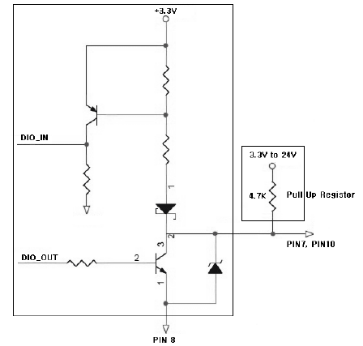
Internal Circuit for Line 1 and Line 2 (TTL 3.3V)
Line 3 & Line 4 (Opto-Isolated Input)
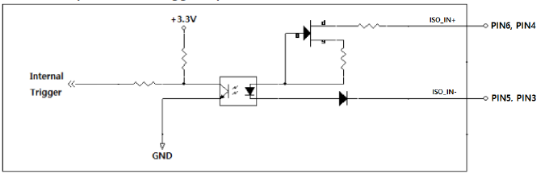
Internal Circuit for Line 3 and Line 4 (Trigger Input)
4. Camera Features & Functions
4.1 Image Format Control
Provides controls for output image size, position, pixel depth, and orientation.
| Parameter | Value / Range | Description |
|---|---|---|
| Sensor Width / Height | 1296 / 1032 | Maximum pixel dimensions of the IMX990 sensor. |
| Width / Height | 8 to 1296 / 2 to 1032 | Adjustable output resolution. Width must be a multiple of 8. |
| Offset X / Offset Y | 0 to 1288 / 0 to 1030 | Horizontal and vertical starting point for ROI. |
| Pixel Format | Mono8 / 10 / 12 / 10Packed / 12Packed | Selects the bit depth of the output data. |
| Test Pattern | Grey Ramp / Color Bar / etc. | Internal patterns used for diagnostic purposes. |
| Reverse X / Reverse Y | On / Off | Horizontal or Vertical mirror imaging. |
| Decimation H / V | 1, 2 | Sub-sampling factor to reduce resolution and increase frame rate. |
4.1.1 Image Size and Position (ROI)
The Region of Interest (ROI) allows you to define a specific sub-area of the sensor for output. Reducing the image Height significantly increases the maximum possible frame rate.
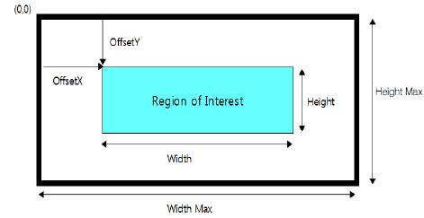
Figure 4.1.1 Image Area and Offset Configuration
4.1.2 Decimation (Sub-sampling)
Decimation reduces image resolution by skipping pixels (columns or rows) during sensor readout.
- Decimation Horizontal: Reduces image width (x1, x2). Reduces data bandwidth usage.
- Decimation Vertical: Reduces image height (x1, x2). Increases the maximum frame rate.
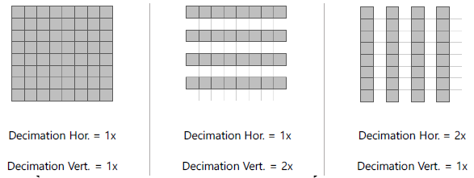
Figure 4.1.2 Pixel Decimation Logic
4.1.3 Reverse X and Reverse Y (Mirroring)
Flips the image data horizontally or vertically. This operation is performed on the camera side, saving PC processing resources.
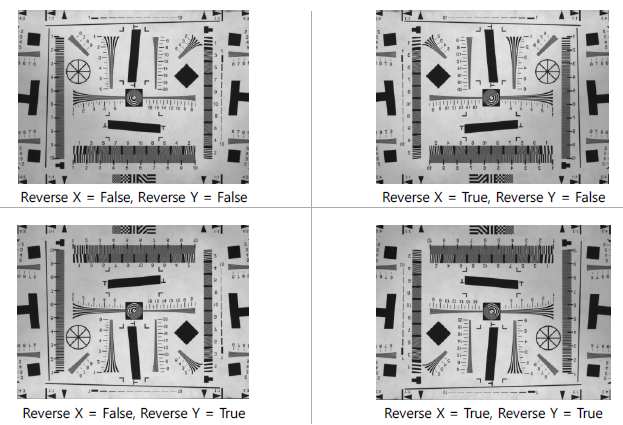
Figure 4.1.3 Reverse X (Horizontal) and Reverse Y (Vertical)
- The Reverse operation is processed during the sensor readout stage.
- Enabling Reverse X or Reverse Y does not affect the maximum frame rate or bandwidth.
- Ensure that your inspection software is calibrated to the mirrored coordinate system if this feature is enabled.
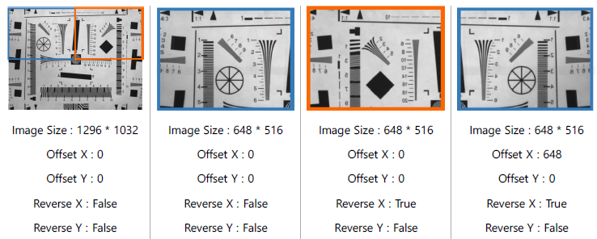
4.1.4 Pixel Format
Defines the bit depth and data alignment of the output pixels. Choose a format based on your inspection precision and network bandwidth requirements.
| Format Name | Data Depth | Description |
|---|---|---|
| Mono8 | 8-bit | Standard grayscale, lowest bandwidth. |
| Mono10 / Mono12 | 10/12-bit | Higher precision (transmitted as 16-bit per pixel). |
| Mono10/12Packed | 10/12-bit | Compressed bit depth to optimize Gigabit Ethernet bandwidth. |
4.1.5 Test Pattern
Generates internal digital patterns instead of sensor data. Useful for verifying the connection and software integration without a lens or light source.
- Off: Normal sensor output.
- Grey Ramp: Gradually increasing grayscale values.
- Static Pattern: Fixed diagnostic patterns.
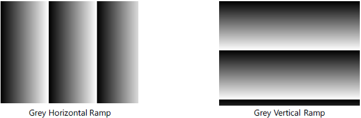
Figure 4.1.5 Internal Diagnostic Test Patterns
4.2 Acquisition Control
This function configures the image acquisition method from the camera.
| Item | Setting Value | Description |
|---|---|---|
| Acquisition Mode | Continuous Single Frame Multi Frame |
Acquires images from the 'Acquisition Start' command based on the following conditions: - Continuous: Acquires continuously until an 'Acquisition Stop' command. - Single Frame: Acquires exactly one image and stops. - Multi Frame: Acquires a defined number of frames and stops automatically. |
| Acquisition Start | Execute | Command to start image acquisition. |
| Acquisition Stop | Execute | Command to terminate image acquisition. |
| Acquisition Frame Count | 0 to 255 | Number of images to transmit in Burst mode from the start point. Only valid when mode is 'Multi Frame'. |
4.2.1 Single Frame
Captures and transmits one image every time the 'Acquisition Start' command is issued. Since it automatically stops after one frame, a separate 'Acquisition Stop' command is not required.
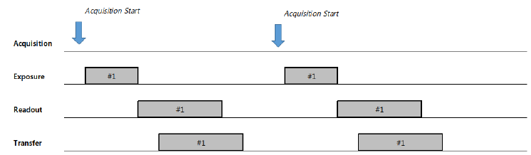
Figure 4.2.1 Timing Diagram of Single Frame Mode
- If 'Trigger Mode' is 'On', exposure and transmission occur upon trigger input.
- If 'Trigger Mode' is 'Off', a new image can be acquired using only the 'Acquisition Start' command.
4.2.2 Multi Frame
Captures and transmits the specific number of images defined in 'Acquisition Frame Count' every time the 'Acquisition Start' command is issued. Acquisition stops automatically after the count is reached.
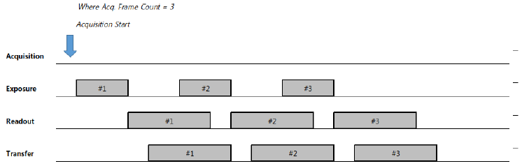
Figure 4.2.2 Timing Diagram of Multi Frame Mode
4.2.3 Continuous
Captures and transmits images periodically based on the cycle defined in 'Acquisition Frame Rate' from the point the 'Acquisition Start' command is issued. If 'Acquisition Stop' is called during grabbing, the camera completes the current readout/transmission before stopping.
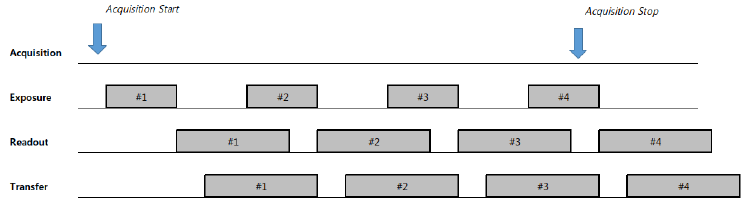
Figure 4.2.3 Timing Diagram of Continuous Mode
4.3 Trigger Mode Control
Controls the timing of image acquisition and output. Acquisition can be synchronized via external signals (Trigger Mode = On) or internal signals (Trigger Mode = Off, Freerun Mode).
| Item | Setting Value | Description |
|---|---|---|
| Trigger Mode | Off On |
- Off: Freerun mode. Internal trigger signals are generated based on 'Acquisition Frame Rate'. - On: Trigger mode. Exposure starts based on hardware (Line 1~4) or software trigger commands. |
| Resulting Frame Rate | (Read Only) | Displays the frame rate when 'Trigger Mode' is set to 'Off'. It is determined by Image size, 'Acquisition Frame Rate', 'Exposure Time', 'Pixel Format', 'Decimation', etc. |
| Trigger Source | Line 1 ~ 4 Software |
Selects the source for the trigger signal. |
| Trigger Delay | 0 to 57,868,838 (µs) | Defines the delay time from trigger reception to the start of sensor exposure. |
| Transfer Delay | 0 to 57,868,838 (µs) | Defines the delay time for image packet transmission after readout. Only valid when 'Low Latency Mode' is Off. |
| Trigger Activation | Rising Edge (Read Only) | Defines the phase reference for the internal trigger signal (Fixed to Rising Edge). |
4.3.1 Trigger Mode
When Trigger Mode is Off, the camera operates in Freerun mode, capturing images at the maximum possible frame rate defined by current settings. When Trigger Mode is On, exposure start or duration is determined by the input trigger signal.
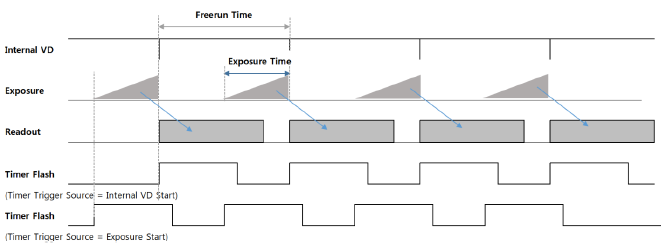
Figure 4.3.1 Timing Diagram of Freerun Mode
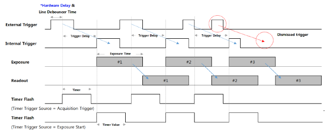
Figure 4.3.2 Timing Diagram of Trigger Signals
* Hardware Delay (Opto-isolated Input)
| Edge Type | Delay Time |
|---|---|
| Rising Edge | 4.5 µs |
| Falling Edge | 35 µs |
4.3.2 Trigger Source
Selects the source of the trigger signal. Both hardware signals and software commands are supported.
| Source | Description |
|---|---|
| Software | Internal trigger signal generated by the 'TriggerSoftware' command. (Valid only in Timed Mode) |
| Line 1 | Hardware trigger via Line 1 (Direct I/O, TTL 3.3V). |
| Line 2 | Hardware trigger via Line 2 (Direct I/O, TTL 3.3V). |
| Line 3 | Hardware trigger via Line 3 (Opto-isolated Input). |
| Line 4 | Hardware trigger via Line 4 (Opto-isolated Input). |
- By setting the 'Counter Selector' in the 'Counter And Timer Control' category to 'Line Trigger', the total number of valid triggers input to the camera is returned in 'Counter Value'.
- The current counter can be updated using the 'Counter Update Feature' parameter.
- This counter is initialized (reset) to 0 by the 'Acquisition Start' command.
- When using 'Software' triggers, the 'Exposure Mode' must be set to 'Timed'.
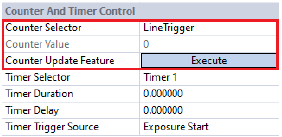
4.3.3 Trigger Delay
This function defines a specific delay between the reception of a trigger signal and the actual start of the sensor's exposure. It is used to synchronize the camera with external components such as lighting or conveyors.
- Important Note: If a new trigger signal is input while a trigger delay is already in progress, the current delay operation will continue and the subsequent new trigger will be ignored (Dismissed).
- If the delay time exceeds the input trigger period, it will result in missing image captures and a decreased Frame Rate.
4.3.4 Transfer Delay
This function defines a delay time for initiating image packet transmission after the camera has finished internal image pre-processing. This is primarily used to balance and distribute the network bandwidth load when multiple cameras are transmitting data to a single host PC.
For more detailed timing information, please refer to Section 4.16.1 Low Latency Mode.
4.4 Exposure Control
This section explains how to configure the sensor exposure time and control mode. Exposure can be managed using a fixed timer or the input trigger pulse width.
| Item | Setting Value | Description |
|---|---|---|
| Exposure Mode | Timed Trigger Width |
- Timed: Exposure time is fixed by the 'Exposure Time' parameter. - Trigger Width: Exposure time matches the active width of the trigger pulse. |
| Exposure Time | 13.1 to 1,000,000 (µs) | Sets the specific exposure duration in Timed mode. |
| Exposure Auto | Off Once Continuous |
Automatically adjusts 'Exposure Time' based on target image brightness. |
4.4.1 Exposure Mode
Selects the method used to control the duration of sensor integration.
- Timed: The trigger signal starts the exposure, and its duration is determined by the internal 'Exposure Time' setting.
- Trigger Width: The sensor begins exposure at the trigger signal's rising edge and terminates it at the falling edge. This allows for variable exposure times controlled by external hardware.
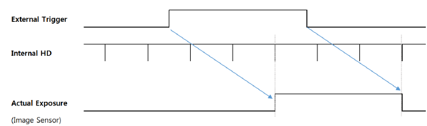
Figure 4.4.1 Comparison of Exposure Modes
4.4.2 Exposure Time
In Timed mode, this parameter directly sets the integration time in microseconds.
- Range: 13.1 µs to 1,000,000 µs (1 second).
- Internal Delay: There is a fixed internal delay of 3HD (Horizontal period) from trigger reception to exposure start.
- Exposure Offset: An internal sensor offset of 7.372 µs is applied to the actual exposure duration.
4.4.3 Exposure Auto
This function automatically adjusts the ‘Exposure Time’ to maintain a constant desired brightness level. It is available when the ‘Exposure Mode’ is set to ‘Timed’. The ‘Exposure Time’ is adjusted only within the range defined between ‘Auto Exposure Time Lower Limit’ and ‘Auto Exposure Time Upper Limit’.
| Item | Setting Value | Description |
|---|---|---|
| Exposure Auto | Off Once Continuous |
- Off: Sets the exposure time manually. - Once: Adjusts the exposure time once to achieve the target brightness. - Continuous: Continuously adjusts the exposure time to maintain target brightness. |
| Auto Exposure Target | 0 to 255 (8-bit DN) | Sets the target brightness value desired by the user. |
| Auto Exposure Time Lower Limit | (Unit: µs) | The minimum allowed exposure time for the variable shutter range. |
| Auto Exposure Time Upper Limit | (Unit: µs) | The maximum allowed exposure time for the variable shutter range. |
- If the Exposure Time is set too short, the output image may flicker depending on the frequency of the lighting source.
- If the 'Exposure Time' becomes longer than the frame period (1/FPS) to reach the target brightness, the frame rate may decrease.
4.5 Digital I/O Control
Configures the external input and output signals of the camera. The logical behavior and physical direction of each port can be defined through this section.
| Item | Setting Value | Description |
|---|---|---|
| Line Selector | Line 1 Line 2 Line 3 Line 4 |
Selects the specific I/O line to configure. - Line 1, 2: Direct I/O ports. - Line 3, 4: Opto-isolated Input ports. |
| Line Debouncer Time | 0 to 882.995 (µs) | Adjusts the debounce filter time. Refer to Section 4.5.1 for details. |
| Line Mode | Input Output |
Defines the physical direction of the signal. - Line 1, 2 support both Input/Output. - Line 3, 4 support Input only. |
| Line Inverter | True False |
- True: Inverts the logic phase of the selected input or output. - False: Standard non-inverted logic. |
| Line Status | True False (Read Only) |
Returns the current logical state of the selected line. True represents Logical High. |
| Line Source | Exposure Active Timer Active User Output 1 |
Selects the signal source for the selected Output line. - Exposure Active: Strobe signal active during integration. - Timer Active: Pulse defined by internal Timer Duration. - User Output 1: Manual output level defined by 'User Output Value'. |
| User Output Value | True False |
Sets the manual output level when 'Line Source' is set to 'User Output 1'. |

Figure 4.5 Diagram of Digital I/O control
4.5.1 Line Debouncer Time
The debouncer is used to filter out noise or mechanical chattering from the input signals. A valid input state must persist for at least the configured 'Line Debouncer Time' before the camera recognizes it as a valid trigger. The internal trigger recognition is delayed exactly by the duration of the Debouncer Time.
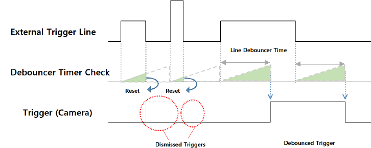
Figure 4.5.1 Noise Filtering Logic of Line Debouncer
4.6 Timer Control
In Timer Control, you can configure the strobe signal outputted externally from the camera. Depending on the current 'Trigger Mode', different timing sources can be used to synchronize with external lighting or mechanical devices.
- Trigger Mode = Off (Freerun): The Timer Flash signal generation timing can be selected as either 'Exposure Start' or 'Internal VD Start'. (Refer to Section 4.3.1 timing diagrams). Note that VD initialization occurs before the shutter operation, so a 'Timer Delay' might be necessary to perfectly synchronize with lighting.
- Trigger Mode = On: The generation point can be set to 'Exposure Start' or 'Acquisition Trigger' (the point when the trigger signal is detected/state transition). You can align the flash duration with the actual exposure window using 'Timer Delay'.
| Item | Setting Value | Description |
|---|---|---|
| Timer Duration | 0 to 57,868,838 (µs) | Defines the Pulse Width of the outputted Timer Flash signal. A setting of 0 effectively turns the output Off. |
| Timer Delay | 0 to 57,868,838 (µs) | Defines the generation delay time for the outputted Flash signal. A setting of 0 indicates no delay. |
| Timer Trigger Source | Exposure Start Acquisition Trigger Internal VD Start |
Selects the trigger point that initiates the Flash Timer: - Exposure Start: Triggered when sensor integration begins. - Acquisition Trigger: Triggered at the point of external trigger signal input. - Internal VD Start: Triggered at the internal counter reset point during Freerun mode. |
4.7 Counter Control
This function provides step-by-step counters to monitor the sequence of receiving triggers, performing exposures, and reading out images. It is particularly useful for verifying the reliability of camera operations against external trigger signals and checking for signal inputs that exceed camera specifications.
| Item | Setting Value | Description |
|---|---|---|
| Counter Selector | LineTrigger ExposureStart ExposureEnd FrameEnd ExposureOverTrigger ReadoutOverTrigger |
Selects the specific event counter to monitor: - LineTrigger: Total number of valid triggers received (Line 1~4 and Software). - ExposureStart: Number of times actual exposure has started. - ExposureEnd: Number of times actual exposure has completed. - FrameEnd: Number of frames successfully readout from the sensor. - ExposureOverTrigger: Number of triggers received while the sensor was already exposing. - ReadoutOverTrigger: Number of times a new exposure completed while the previous frame was still being readout (Active only when Trigger Mask Enable is On). |
| Counter Value | (Read Only) | Displays the current value of the selected counter. All counter values are reset to 0 upon the 'Acquisition Start' command. |
4.7.1 Exposure Over Trigger
When the 'Exposure Mode' is set to 'Timed', any trigger signal received during an active exposure period is ignored. The 'ExposureOverTrigger' counter increments each time this event occurs, allowing users to diagnose timing conflicts in high-speed applications.
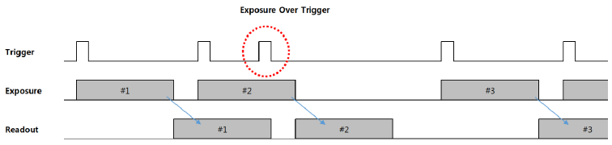
Figure 4.7.1 Timing Diagram of Exposure Over Trigger Event
4.7.2 Readout Over Trigger
When the 'Exposure Mode' is set to 'Trigger Width', if a new trigger signal is input faster than the minimum required cycle, a 'Readout Over Trigger' event occurs. In this case, a new frame begins readout while the previous frame is still being processed, which leads to outputting a corrupted image.
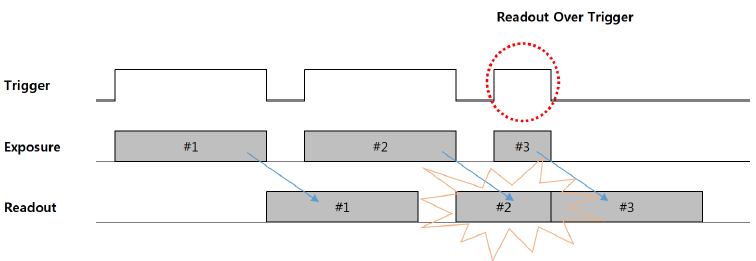
Figure 4.7.2 Timing Diagram of Readout Over Trigger Event
4.8 Transport Layer Control
- Low Latency Mode: Packets are sent immediately after line readout (Minimum delay).
- Full Framed Mode: Packets are buffered until the whole frame is ready (Allows Transfer Delay).
- SCPS Packet Size: Optimized for network performance (Recommended: 7812 or higher).
5. Appearance & Dimensions
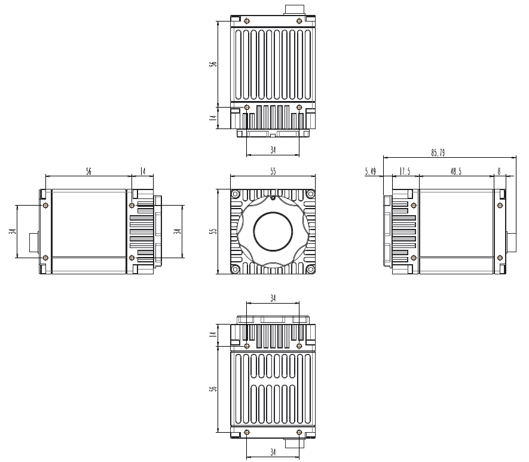
Mechanical Outline: 55 × 55 × 74 mm (79.49 mm including mount)